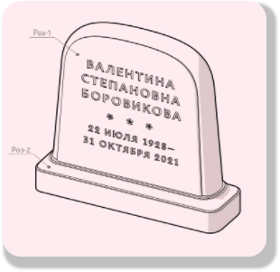
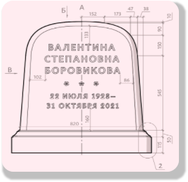
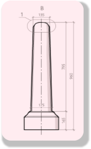
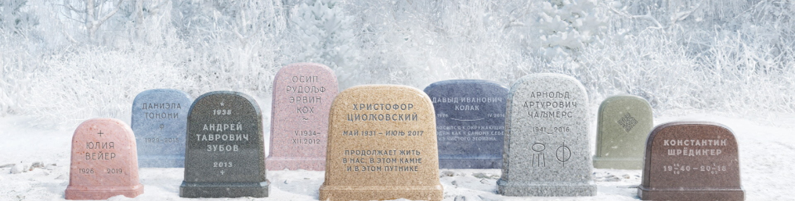

Каменные сказания
Наши памятники не просто камни это мосты между мирами, где форма и материал становятся языком, говорящим о любви, уважении и вечности. Мы отвергаем мрачность черного гранита, ведь жизнь, даже завершившись, оставляет после себя свет. Наши работы вдохновлены идеей «открытого индивидуализма» верой в то, что сознание едино, а память о человеке растворяется в общем потоке бытия, как волна в океане. Каждое надгробие — это не монумент утраты, а арт-объект, приглашающий к созерцанию и принятию цикличности жизни.



Округлые формы не просто инженерное решение. Они символизируют циклы природы: дождь стекает, не оставляя следов,
а отсутствие острых углов напоминает, что в смерти нет места агрессии. Это баланс между легкостью и
устойчивостью, как сама жизнь.

Цветные и светлые граниты из Карелии, Урала, Азии и Скандинавии. Мы избегаем черного он напоминает о пустоте.
Вместо него оттенки, перекликающиеся с рассветом, песком, горными вершинами.